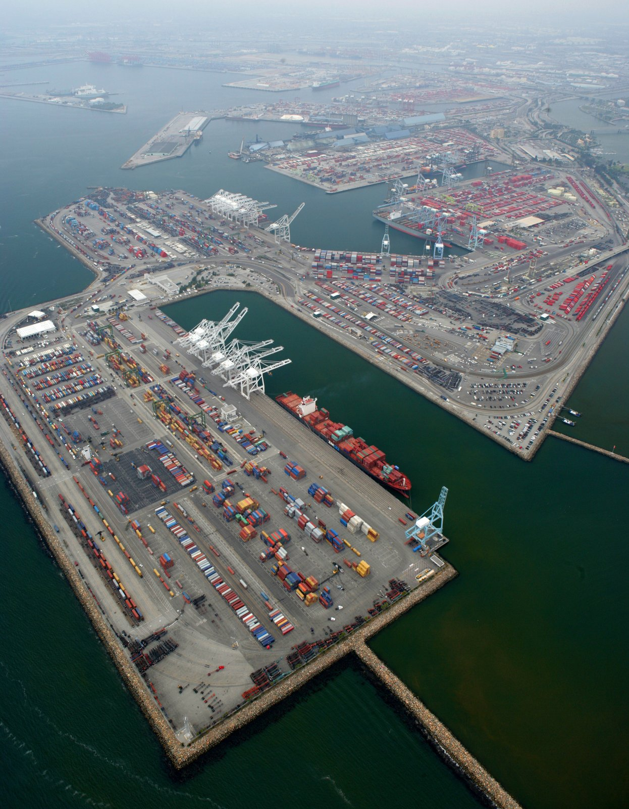

[250년 미국이야기⑦] 50년째 생산 없는 소비제국
1976년부터 50년 연속 무역적자
대한국 적자, 아홉 달 만에 지난해 추월
올해 6월 말 순대외금융부채 22조4200억달러
AI경제저널=김갑봉 기자 | 미국은 1976년부터 2025년까지 50년 동안 한 해도 빠짐없이 무역적자를 냈다. 2025년 상품과 서비스를 합친 적자는 9320억달러(약 1382조원)였다. 이 연재는 외화를 2026년 상반기 수준인 1달러 1483원으로 환산한다.
미국은 해마다 수출보다 수입이 많았다. 필자는 세계가 미국 국채와 주식 같은 자산을 사들이는 돈이 그 차액을 메워 왔고, 미국이 세계의 공장이라기보다 세계의 소비자가 됐다고 본다.
2026년에도 적자는 그치지 않았다. 1~9월 적자는 1년 전보다 줄었지만, 9월 한 달 적자는 1050억달러(약 156조원)로 1년 전 9월보다 457억달러(약 68조원) 많았다. 같은 기간 미국 대한국 상품 적자는 이미 지난해 한 해 적자를 넘어섰다.
상품 적자 1조2596억달러
2025년 미국 상품 무역적자는 1조2596억달러(약 1868조원)다. 수출 2조1919억달러(약 3251조원)보다 수입 3조4515억달러(약 5119조원)가 그만큼 많았다.
상품 적자는 1년 전보다 468억달러(약 69조원), 3.9% 늘었다. 2026년 6월 연례개정을 거친 수치다(미 경제분석국·인구조사국, 2026년 6월 9일).
미국이 앞서는 분야는 서비스다. 2025년 서비스 흑자는 3277억달러(약 486조원)로 1년 전 3273억달러(약 485조원)와 거의 같았다.
서비스 흑자로는 상품 적자를 다 메우지 못했다. 상품과 서비스를 합친 무역적자는 2024년 8855억달러(약 1313조원)였다. 2025년에는 9320억달러로 465억달러(약 69조원), 5.3% 늘었다(미 경제분석국·인구조사국, 2026년 6월 9일).
적자는 어제오늘 일이 아니다. 인구조사국 장기 시계열을 보면 미국이 상품과 서비스를 합쳐 마지막으로 흑자를 낸 해는 1975년이다. 1976년부터 2025년까지 해마다 적자였다(미 인구조사국, 1960~2025년 시계열).
이 시계열은 연례개정 전 수치를 담아 2025년 적자를 9015억달러(약 1337조원)로 적는다. 2월 첫 발표 때는 2024년 9035억달러(약 1340조원)보다 조금 줄었으나, 6월 연례개정에서 증가로 바뀌었다.
2026년 다시 불어난 적자
2026년 1~9월 무역적자는 6623억달러(약 982조원)다. 1년 전 같은 기간 7546억달러(약 1119조원)보다 924억달러(약 137조원), 12.2% 줄었다. 수출은 2조8512억달러(약 4228조원)로 11.6% 늘었고, 수입은 3조5134억달러(약 5210조원)로 6.2% 늘었다(미 경제분석국·인구조사국, 2026년 11월 4일).
2025년 1~3월 적자는 당시 발표로 1년 전보다 92.6% 불어났다(미 경제분석국·인구조사국, 2025년 5월 6일). 개정 수치로 다시 보면 1~3월 적자는 2025년 3748억달러(약 556조원)였다. 2026년에는 1588억달러(약 236조원)로 2159억달러(약 320조원) 줄었다.
반면 4~9월 적자는 2025년 3799억달러(약 563조원)였다. 2026년에는 5034억달러(약 747조원)로 1235억달러(약 183조원), 32.5% 늘었다(미 경제분석국·인구조사국, 2026년 11월 4일, 필자 계산).
무엇을 더 사들였는지도 달라졌다. 2026년 1~9월 자동차를 뺀 자본재 수입은 1조1744억달러(약 1742조원)다. 1년 전 8203억달러(약 1217조원)보다 3541억달러(약 525조원), 43.2% 늘었다(미 경제분석국·인구조사국, 2026년 11월 4일, 부표 8, 인구조사국 기준·계절조정).
컴퓨터 수입은 1487억달러(약 221조원)에서 2967억달러(약 440조원)로 두 배가 됐다. 같은 기간 컴퓨터 부속품 수입은 1007억달러(약 149조원)에서 1894억달러(약 281조원)로, 반도체 수입은 548억달러(약 81조원)에서 1047억달러(약 155조원)로 늘었다. 통신장비 수입도 821억달러(약 122조원)에서 1277억달러(약 189조원)가 됐다.
소비재 수입은 6302억달러(약 935조원)에서 5112억달러(약 758조원)로 1190억달러(약 176조원), 18.9% 줄었다. 소비재 수입 감소분 1190억달러 가운데 1027억달러(약 152조원)가 의약품이다(미 경제분석국·인구조사국, 2026년 11월 4일, 부표 6·8, 인구조사국 기준·계절조정).
달마다 보면 적자가 다시 늘었다. 2026년 1~4월 월간 적자는 500억달러대였다. 그런데 5월 758억달러(약 112조원), 6월 712억달러(약 106조원), 7월 928억달러(약 138조원), 수정된 8월 1057억달러(약 157조원), 9월 1050억달러로 다시 불어났다.
9월 적자는 1년 전 9월 594억달러(약 88조원)보다 457억달러 많다. 두 기관은 10월분을 12월 8일 발표한다(미 경제분석국·인구조사국, 2026년 11월 4일).
덜 만들고 더 사는 구조
이 연재 6편에서 본 대로 미국 제조업은 무너지기만 한 것이 아니다. 2014년 이후 더디게나마 되살아났다.
세인트루이스 연은 분석을 보면 제조업 사업체는 2014년 초 33만6000곳에서 2024년 말 40만1000곳으로 19% 늘었다. 같은 기간 제조업 고용은 5% 늘었다. 사업체가 그대로였다면 제조업 일자리가 200만개 적었으리라는 추산도 내놨다(마르투·레, 2025년).
그래도 제조업 고용 비중은 낮다. 2024년 말 제조업 종사자는 약 1260만명으로 민간 고용의 9.3%다. 같은 연구진은 1960년 제조업이 고용의 평균 33.7%를 차지했다고 적었다. 지난 10년 늘어난 제조업 일자리 가운데 절반가량이 식품 제조업에서 나왔다(마르투·레, 2025년).
미국은 만들기를 완전히 놓지 않았다. 필자는 더딘 공장 회복이 사들이는 규모를 따라잡지 못했고, 이어지는 적자도 같은 구조에서 나왔다고 본다.
적자 원인을 두고는 다른 해석도 있다. 벤 버냉키 당시 연준 이사는 2005년 세계 저축 과잉이 미국 경상수지 적자 확대를 설명하는 데 도움이 된다고 봤다(버냉키, 2005년).
국내 연구도 비슷한 방향을 가리킨다. 조갑제는 1999~2008년 미국과 아시아 10개국 경상수지와 환율을 분석했다. 그는 아시아 실질환율 절하도 일부 원인이었지만, 아시아 투자가 위축돼 생긴 잉여저축과 미국 순저축 부족이 환율보다 더 큰 요인이었다고 결론지었다(조갑제, 2010년).
물건 수입, 서비스 수출
의회 합동경제위원회 공화당 측이 연례개정 전 자료로 정리한 2025년 최대 수입품은 의약품과 컴퓨터, 승용차였다. 이 셋이 수입액의 20.04%를 차지했다.
최대 수출품은 민간 항공기와 엔진·부품, 의약품, 원유로 수출액의 17.09%였다. 의약품은 두 목록에 다 올랐다. 수입 쪽에는 컴퓨터와 승용차가, 수출 쪽에는 항공기와 원유가 올랐다.
필자는 이 목록을 미국이 공산품을 들이고 항공기와 의약품, 에너지, 서비스를 팔아 일부를 메우는 구조로 읽는다.
서비스는 흑자다. 서비스에서 미국은 2024년과 2025년 잇달아 3000억달러(약 445조원) 넘는 흑자를 냈다.
2026년 1~9월 서비스 흑자는 2763억달러(약 410조원)로 1년 전 같은 기간 2456억달러(약 364조원)보다 많다(미 경제분석국·인구조사국, 2026년 6월 9일·11월 4일).
대중 적자 감소, 타이완·베트남 증가
나라별로 보면 적자 상대는 아시아와 유럽, 멕시코에 몰려 있다. 2025년 상품 적자는 유럽연합이 2203억달러(약 327조원)로 가장 컸고, 단일 국가로는 중국이 2027억달러(약 301조원)로 최대였다.
멕시코 1970억달러(약 292조원), 베트남 1783억달러(약 264조원), 타이완 1466억달러(약 217조원)가 뒤를 이었다(미 인구조사국, 국가별 상품교역 표). 나라별 수치는 인구조사국 기준이라 국제수지 기준 총액과 다르다.
2025년 미국 상품 흑자가 큰 나라는 네덜란드 590억달러(약 87조원), 영국 326억달러(약 48조원), 홍콩 285억달러(약 42조원) 순이다(미 인구조사국, 국가별 상품교역 표).
중국 대상 적자는 1년 새 944억달러(약 140조원) 줄었다. 대중 수출이 373억달러(약 55조원) 줄어 1060억달러(약 157조원)가 됐다. 대중 수입은 1317억달러(약 195조원) 줄어 3087억달러(약 458조원)가 됐다(미 인구조사국, 국가별 상품교역 표).
같은 해 타이완 적자는 728억달러(약 108조원), 베트남 적자는 550억달러(약 82조원) 불었다. 두 나라 증가분을 합친 1278억달러(약 190조원)는 대중 적자 감소분 944억달러보다 크다(미 인구조사국, 국가별 상품교역 표, 필자 계산).
필자는 대중 적자가 줄어든 자리를 다른 나라가 채웠고, 미국 소비가 줄어든 것이 아니라 물건을 대는 나라가 바뀌었다고 본다.
2026년에도 이 흐름이 이어졌다. 9월 한 달 상품 적자(계절조정)는 멕시코 287억달러(약 43조원), 베트남 253억달러(약 38조원), 타이완 219억달러(약 32조원) 순으로 컸다. 중국은 179억달러(약 27조원)로 넷째였다(미 경제분석국·인구조사국, 2026년 11월 4일).
2025년 관세 부담은 연말로 갈수록 커졌다. 미국이 2025년 12월까지 12개월 동안 산정한 수입 관세는 2608억달러(약 387조원)였다. 12월 한 달 평균 적용 관세율은 9.42%로 12개월 평균보다 1.53%포인트 높았다(미 의회 합동경제위원회, 2026년 2월 19일).
앞서 본 연례개정 수치대로 관세 부담이 커진 2025년에도 상품과 서비스를 합친 무역적자는 465억달러 늘었다.
적자와 외국 자본, 순대외금융부채
국제수지에서 경상수지 적자는 금융계정으로 들어온 외국 자본 순유입과 대체로 짝을 이룬다. 배당과 이자 같은 소득까지 넣은 경상수지 적자는 2026년 2분기 2460억달러(약 365조원)로 국내총생산의 3.0%였다. 1분기 2.7%에서 높아졌다(미 경제분석국, 2026년 9월 24일). 경제분석국은 같은 분기 미국 금융계정 순차입(파생상품을 포함한 금융거래 순액)을 3697억달러(약 548조원)로 집계했다.
파생상품을 뺀 거래로 보면 미국이 외국에 진 금융부채는 9789억달러(약 1452조원), 미국이 가진 해외 금융자산은 6633억달러(약 984조원) 늘었다(미 경제분석국, 2026년 9월 24일).
정부 빚도 쌓였다. 연방정부 총부채는 2026년 11월 19일 40조7098억달러(약 6경373조원)다. 정부 계정이 보유한 빚 7조8083억달러(약 1경1580조원)를 뺀 공공 보유 부채는 32조9015억달러(약 4경8793조원)다(미 재무부, 2026년 11월 19일).
흔히 재정적자와 경상수지 적자를 쌍둥이 적자라 부른다. 김소영과 누리엘 루비니는 미국 역사 자료에서 두 적자가 엇갈리는 쌍둥이 괴리가 더 흔하다는 실증 증거를 들었다.
두 사람이 변동환율기 미국 자료로 추정한 결과 재정 확장 충격은 경상수지를 개선했다. 두 사람은 재정보다 경기(산출) 충격이 두 수지를 함께 움직인다고 설명했다(김소영·루비니, 2008년). 필자는 이 결과를 재정적자가 늘면 경상수지 적자도 함께 는다고 단정하기 어렵다는 뜻으로 읽는다.
경제분석국은 2026년 6월 24일 연례개정에서 미국 안 외국인 직접투자 지분을 시장가치로 다시 매기는 방법을 고쳤다.
새 원자료도 함께 반영한 이 개정으로 2025년 말 미국 순국제투자포지션은 마이너스 27조5400억달러(약 4경842조원)에서 마이너스 21조8700억달러(약 3경2433조원)로 바뀌었다.
마이너스는 대외금융부채가 대외금융자산보다 그만큼 많다는 뜻이다(이하 순대외금융부채). 개정으로 줄어든 폭은 5조6700억달러(약 8409조원)다(미 경제분석국, 2026년 6월 24일, 필자 계산).
가장 최근 수치는 2026년 6월 말 순대외금융부채 22조4200억달러(약 3경3249조원)다. 미국이 가진 해외자산은 46조9700억달러(약 6경9657조원), 외국이 가진 미국 자산은 69조3900억달러(약 10경2905조원)다.
외국이 가진 미국 자산은 석 달 사이 4조8700억달러(약 7222조원) 늘었다. 그 가운데 3조9500억달러(약 5858조원)가 거래가 아니라 가격 변화에서 나왔다(미 경제분석국, 2026년 9월 24일).
피에르올리비에 구랭샤와 엘렌 레이는 경기 흐름에 따른 미국 대외 조정 가운데 27%를 자산 가치 변화가 맡았다고 추정했다(구랭샤·레이, 2007년).
2025년 말 줄어든 5조6700억달러는 거래나 시장 가격 변화가 아니라 연례개정(측정 방식 개선과 새 원자료 반영)에서 나왔다.
필자는 미국 순대외금융부채를 확정된 빚만이 아니라, 세계가 미국 자산을 얼마로 쳐 주느냐에 따라 오르내리는 값으로도 본다.

한국, 아홉 달 만에 지난해 적자 추월
한국은 이 구조에서 흑자를 보는 쪽이다. 인구조사국 집계로 2025년 미국 대한국 상품 적자는 564억8000만달러(약 84조원)였다.
미국은 한국에 690억7000만달러(약 102조원)를 팔고 1255억5000만달러(약 186조원)를 사들였다. 1년 전 적자 656억9000만달러(약 97조원)보다는 92억1000만달러(약 14조원) 줄었다(미 인구조사국, 대한국 상품교역 표).
2026년 들어 흐름이 되돌아섰다. 1~9월 대한국 상품 적자는 672억8000만달러(약 100조원)로 지난해 한 해 적자보다 108억달러(약 16조원) 많다. 미국은 이 기간 한국에 619억6000만달러(약 92조원)를 팔고 1292억4000만달러(약 192조원)를 사들였다.
월별 적자는 7월 105억2000만달러(약 16조원), 8월 88억3000만달러(약 13조원), 9월 122억2000만달러(약 18조원)였다(계절 미조정). 7~9월 석 달 적자 315억7000만달러(약 47조원)가 1~9월 적자의 47%를 차지했다(미 인구조사국, 대한국 상품교역 표, 필자 계산).
필자는 한국이 소비제국에 물건을 대는 나라 가운데 하나이고, 미국이 적자를 줄이겠다며 관세 장벽을 높이거나 미국 소비가 흔들리면 한국 수출이 먼저 영향을 받을 수 있다고 본다.
생산 없는 소비제국
드러난 사실을 간추리면 이렇다. 미국은 1976년부터 50년 동안 해마다 무역적자를 냈다. 2025년에는 상품에서 1조2596억달러 적자를 내 서비스 흑자로 메워도 9320억달러가 모자랐다. 2026년에도 9월 한 달 적자가 1050억달러였다.
제조업 사업체가 10년 새 19% 늘었어도 제조업 고용은 민간 고용의 9.3%에 머물렀다. 2026년 들어 늘어난 수입은 소비재가 아니라 컴퓨터 같은 자본재에서 나왔다.
2025년 대중 적자가 944억달러 줄 때 타이완과 베트남 적자는 1278억달러 늘었고, 미국 대한국 적자는 아홉 달 만에 지난해 한 해 적자를 넘겼다. 2026년 6월 말 순대외금융부채는 22조4200억달러다.
필자는 나라가 무엇을 거두려면 먼저 만들어야 하고 만드는 힘이 얇아지면 거둘 원천도 얇아진다고 본다. 필자가 반세기 동안 한 해도 빠짐없이 쌓인 무역적자를 제국이 밖에서 무너지기 전에 안에서 먼저 비어 가는 기록으로 읽는 까닭이다.
(이 연재는 단행본으로 준비 중인 『250년 미국이야기』 원고를 AI경제저널에 맞게 고쳐 싣는다. 무역 수치는 2026년 11월 4일 발표까지, 국제거래와 순국제투자포지션은 2026년 9월 24일 발표까지 반영했다.)
참고문헌
- 미 경제분석국(BEA)·미 인구조사국(U.S. Census Bureau), "U.S. International Trade in Goods and Services, Annual Revision", 2026년 6월 9일, 부표 1(trad1326). 증감률 3.9%·5.3%는 이 표로 계산한 값. https://www.bea.gov/news/2026/us-international-trade-goods-and-services-annual-revision
- 미 경제분석국(BEA)·미 인구조사국(U.S. Census Bureau), "U.S. International Trade in Goods and Services, September 2026", 2026년 11월 4일, 부표 1·6·8·19(trad0926.xlsx). https://www.bea.gov/news/2026/us-international-trade-goods-and-services-september-2026
- 미 경제분석국(BEA)·미 인구조사국(U.S. Census Bureau), "U.S. International Trade in Goods and Services, March 2025", 2025년 5월 6일. https://www.bea.gov/news/2025/us-international-trade-goods-and-services-march-2025
- 미 인구조사국(U.S. Census Bureau), "U.S. Trade in Goods and Services - Balance of Payments (BOP) Basis, 1960 through 2025", 연례개정 전 역사표. https://www.census.gov/foreign-trade/statistics/historical/gands.pdf
- 미 인구조사국(U.S. Census Bureau), "Trade in Goods with European Union·China·Mexico·Vietnam·Taiwan·Netherlands·United Kingdom·Hong Kong", 국가별 상품교역 표. https://www.census.gov/foreign-trade/balance/c0003.html 외 같은 경로 c5700·c2010·c5520·c5830·c4210·c4120·c5820
- 미 인구조사국(U.S. Census Bureau), "Trade in Goods with Korea, South". https://www.census.gov/foreign-trade/balance/c5800.html
- 미 경제분석국(BEA), "U.S. International Transactions and Investment Position, 1st Quarter 2026 and Annual Update", 2026년 6월 24일. https://www.bea.gov/news/2026/us-international-transactions-and-investment-position-1st-quarter-2026-and-annual-update
- 미 경제분석국(BEA), "U.S. International Transactions and Investment Position, 2nd Quarter 2026", 2026년 9월 24일. https://www.bea.gov/news/2026/us-international-transactions-and-investment-position-2nd-quarter-2026
- 미 의회 합동경제위원회(Joint Economic Committee) 공화당 측, "Trade Deficit Narrowed Slightly in 2025, Ending the year at $902 Billion down from $904 Billion in 2024", 2026년 2월 19일. https://www.jec.senate.gov/public/index.cfm/republicans/2026/2/trade-deficit-narrowed-slightly-in-2025-ending-the-year-at-902-billion-down-from-904-billion-in-2024
- 미 재무부(U.S. Department of the Treasury), 『Debt to the Penny』, 2026년 11월 19일 기준. https://fiscaldata.treasury.gov/datasets/debt-to-the-penny/
- 리카르도 마르투(Ricardo Marto)·호앙 레(Hoang Le), "The Sluggish Renaissance of U.S. Manufacturing", 세인트루이스 연방준비은행 『On the Economy』, 2025년 8월 12일. https://www.stlouisfed.org/on-the-economy/2025/aug/sluggish-renaissance-us-manufacturing
- 피에르올리비에 구랭샤(Pierre-Olivier Gourinchas)·엘렌 레이(Hélène Rey), "International Financial Adjustment", 『Journal of Political Economy』 115권 4호, 665~703쪽, 2007년 8월. DOI 10.1086/521966. https://doi.org/10.1086/521966
- 김소영(Soyoung Kim)·누리엘 루비니(Nouriel Roubini), "Twin deficit or twin divergence? Fiscal policy, current account, and real exchange rate in the U.S.", 『Journal of International Economics』 74권 2호, 362~383쪽, 2008년. DOI 10.1016/j.jinteco.2007.05.012. https://doi.org/10.1016/j.jinteco.2007.05.012
- 벤 S. 버냉키(Ben S. Bernanke), 미 연방준비제도 이사회, "The Global Saving Glut and the U.S. Current Account Deficit", 버지니아경제학회 샌드리지 강연, 2005년 3월 10일. https://www.federalreserve.gov/boarddocs/speeches/2005/200503102/
- 조갑제, 「글로벌 불균형과 환율의 관계: '제2차 브레튼 우즈(Bretton Woods II)' 가설의 유효성」, 『국제지역연구』 14권 1호, 121~138쪽, 국제지역학회, 2010년. https://www.kci.go.kr/kciportal/ci/sereArticleSearch/ciSereArtiView.kci?sereArticleSearchBean.artiId=ART001429395
사진 출처
- [사진1] 글렌 포셋(Glenn Fawcett), 미국 관세국경보호청(U.S. Customs and Border Protection), 「151207-CBP-Miami-GF-0113」, 2015년 12월 7일 촬영, 공공영역. 위키미디어 공용 「File:151207-CBP-Miami-GF-0113 (28784143135).jpg」 사본. https://commons.wikimedia.org/wiki/File:151207-CBP-Miami-GF-0113_(28784143135).jpg
- [사진2] 제임스 R. 터텔롯(James R. Tourtellotte), 미국 관세국경보호청(U.S. Customs and Border Protection), 「Port of Long Beach CA」, 2006년 5월 10일 촬영, 공공영역. 위키미디어 공용 「File:Port of Long Beach, California.jpg」 사본. https://commons.wikimedia.org/wiki/File:Port_of_Long_Beach,_California.jpg
관련기사
- [250년 미국이야기①] 역사의 저울로 미국 250년을 잰다
- [250년 미국이야기②] 석유로 선 미국 250년, 다섯 축이 한자리에서 꺾인다
- [250년 미국이야기③] 미국 유럽 러시아 중국의 250년, 세계 생산의 저울은 두 번 기울었다
- [250년 미국이야기④] 천조국 패권의 일곱 기둥과 무너진 제조업
- [250년 미국이야기⑤] 원주민 축출과 중남미 개입, 200년 이어진 먼로독트린
- [250년 미국이야기⑥] 사라진 제조업 일자리 700만개
저작권자 © AI경제저널 무단전재 및 재배포, AI학습 및 활용 금지